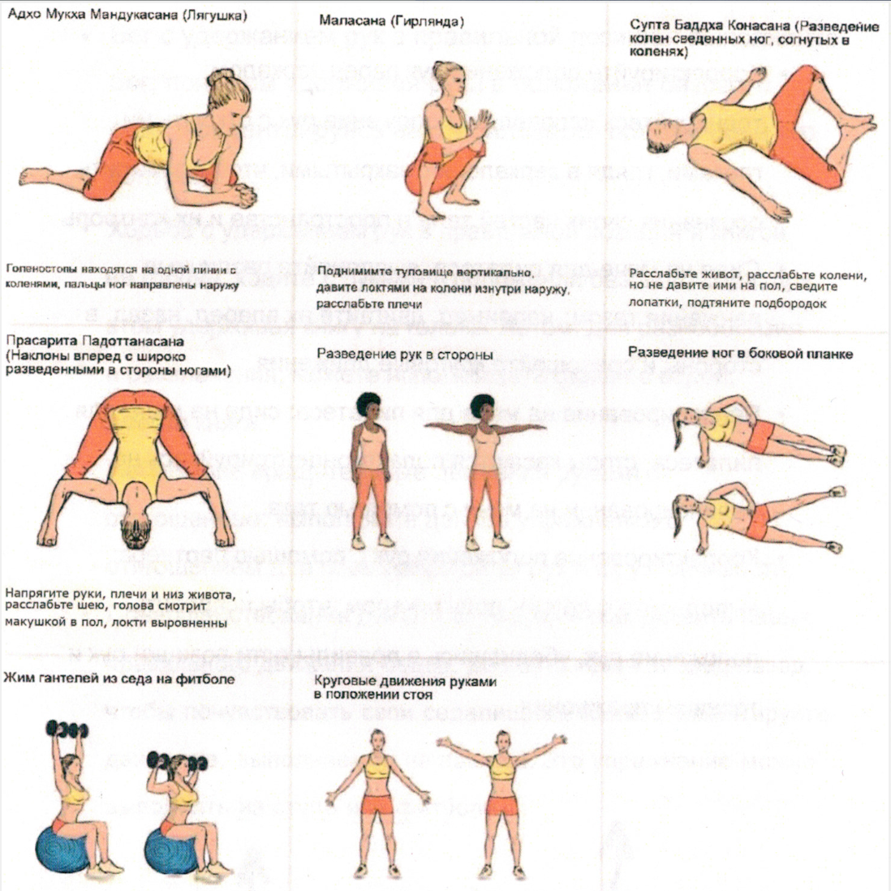

БАЗОВЫЙ СЕД
Статическое упражнение

Нажмите на фото, чтобы увеличить
Наиболее важно тренировать
- Способность чувствовать движения лошади
- Гибкость в тазобедренных суставах
- Мышцы-стабилизаторы верхней части туловища
Подсказка тренеру
Вы можете использовать список выше для контроля подготовки вольтижёров. Нужно ли что-либо из этого списка улучшить?
Биомеханика
-
Фаза подъёма
Эта фаза следует после заскока и начинается из положения седа лицом вперёд на лошади. Вольтижёр выпрямляет руки в стороны.
-
Статическая фаза
После фазы поднятия рук упражнение следует удерживать в течение четырех темпов галопа. Вольтижер должен находиться в устойчивом и контролируемом положении. Напряжены должны быть только те мышцы, которые необходимы для поглощения движений лошади. Ноги опущены вниз и находятся в контакте с лошадью. Сила мышц туловища имеет важное значение.
-
Фаза опускания рук
Вольтижер опускает руки, не прекращая поглощать движения лошади.
Самопроверка
- Вы сидите по центру лошади, ваши седалищные кости параллельны по отношению к лошади.
- Ваши бедра должны быть гибкими и позволять вам эффективно поглощать движения лошади.
- Ваш живот должен быть достаточно напряжен, чтобы стабилизировать верхнюю часть вашего тела.
- Ваши плечи, таз и пятки должны образовывать одну вертикальную линию.
- Ваша грудная клетка должна быть расположена вертикально и при этом без чрезмерного прогибания спины.
- Ваши руки должны находиться на правильной высоте, убедитесь, что ваши плечи расслабленны и опущены.
Развитие силы

Занятия на земле
- Корректируйте положение рук перед зеркалом: тренируйтесь исправлять положение рук с открытыми глазами, глядя в зеркало, и с закрытыми, чтобы повысить осознания своих частей тела в пространстве и их контроль.
- Сидя на мяче для пилатеса, выполняйте различные движения тазом: например, двигайте их вперед, назад, в стороны и совершайте круговые движения.
- Балансирование на мяче для пилатеса: сидя на мяче для пилатеса, стопы касаются пола, сконцентрируйтесь на балансировании на мяче с помощью таза.
- Корректирование положения рук с помощью партнера: выполняйте с другим вольтижером, чтобы исправить положение рук, убедившись в правильности позиции рук и технике упражнения.
Подсказка тренеру:
Убедитесь, что вольтижер обладает достаточной стабильностью плечевого пояса для удержания правильного положения.
Занятия на земле
- Бег с удержанием рук в правильной позиции: выполняйте бег, при этом удерживая руки в положении базового седа, концентрируясь на стабильности положения и его контроле.
- Ходьба с удержанием рук в правильной позиции и книгой на голове: ходите с руками в положении базового седа, при этом удерживая книгу на голове. Летом, для разнообразия и развлечения, можете использовать стакан с водой, вместо книги.
- Небольшие вращательные движения руками с отягощением: выполняйте данное упражнение с отягощением для повышения силы рук и их устойчивости.
- Совершенствование движений тазом: чтобы развить навык правильного движения бедер, двигайте тазом вперед-назад, чтобы почувствовать свои седалищные кости, и иммитируйте движение, выполняемое на лошади. Это упражнение можно выполнять на стуле или фитболе.
Подсказка тренеру:
Убедитесь, что вольтижер обладает достаточной стабильностью плечевого пояса для удержания правильного положения.
Занятия на земле
- Корректируйте положение рук перед зеркалом/по фото/видео: потренируйтесь корректировать положение рук, наблюдая за собой в зеркале, на фото или видео с открытыми и закрытыми глазами, чтобы развить ощущение положения частей тела в пространстве (проприоцепция).
- Корректируйте положение рук с закрытыми глазами с помощью партнера: в паре с другим вольтижером, закройте глаза и помогайте друг другу исправлять положение рук, чтобы развить свою проприоцепцию.
- Исправление положения седа с закрытыми глазами с помощью партнера: Без помощи рук, закройте глаза работайте в паре с другим вольтижером, исправляя положение седа у друг друга, сосредоточьтесь на ощущениях и положении своего тела.
- Базовый сед на балансировочной подушке: выполняйте базовый сед на балансировочной подушке для повышения устойчивости и силы мышц туловища.
- Базовый сед на макете во всех направлениях: выполняйте базовый сед в различных направлениях на макете для повышения баланса и адаптационных способностей.
Подсказка тренеру:
Если у вольтижера недостаточно гибкости бедер, ему будет сложно достичь "длинных ног". Не торопите события, а поработайте отдельно над гибкостью.
Занятие на макете
- Базовый сед во всех направлениях на макете: выполняйте базовый сед во всех направлениях на макете для совершенствования баланса и адаптационных способностей.
- Изменение положения рук, контролируя положения тела: выполняйте перехваты руками, при этом сохраняя хорошую осанку в целом и концентрируясь на выравнивании положения тела и контроле.
- Изменение положения рук с закрытыми глазами: перехватитесь руками с закрытыми глазами, сохраняя правильную осанку, чтобы улучшить равновесие и осознание своего тела.
- Сочетание балансировочной подушки с изменением положения рук: Используйте балансировочную подушку при смене положения рук, чтобы еще больше повысить устойчивость и координацию движений.
- Совершенствуйте движение тазом на балансировочной подушке: для развития гибкости бедер и их движений, выполняйте вращательные движения бедрами вперед и назад, чтобы почувствовать седалищные кости и иммитируйте движения лошади, сочетая это упражнение с балансировочной подушкой для дополнительной сложности.
Подсказка тренеру:
Если у вольтижера недостаток гибкости бедер, достигнуть "длинных ног" будет затруднительно. В таком случае важно не торопиться. Вместо этого, сконцентрируйтесь на отдельном развитии гибкости, чтобы постепенно улучшить этот аспект, не вызывая напряжения.
Тренировка на лошади
- Выполняйте правильный сед на шагу, рыси и галопе: сосредоточьтесь на достижении гармонии с лошадью не зависимо от того, держитесь вы за ручки или нет. Чтобы было проще сфокусироваться, можно закрыть глаза, чтобы лучше ощущать движения лошади и положение вашего собственного тела.
- Считайте вслух в такт лошади: Выполните то же упражнение, что и выше, но считайте вслух синхронно с ритмом лошади во время ходьбы, рыси или галопа. Это помогает понять темп лошади и подстроиться под него.
- Седы боком и лицом назад: попрактикуйте седы боком или лицом назад на шагу или галопе. Это позволяет лучше чувствовать движения лошади и помогает эффективнее подстроиться под них.
Подсказка тренеру:
Всегда следите за тем, чтобы вольтижер повторял движение лошади, не допускайте мышечных зажимов.
Тренировка на лошади
- Поглощение перехода с галопа в рысь: сидя на галопе, сосредоточьтесь на мягком поглощении движений во время перехода в рысь. Упражнение может быть выполнено в различных комбинациях для повышения адаптационных способностей и контроля.
- Сед с закрытыми глазами: выполняйте сед с закрытыми глазами, чтобы обострить и другие чувства, улучшить свою способность сохранять равновесие и интуитивно реагировать на движения лошади.
- Изменяйте положение рук, удерживая правильное положение тела: изменяйте положение рук, обеспечивая при этом правильную осанку всего тела. Это не только улучшает силу и гибкость рук, но и улучшает общую координацию тела и равновесие.
Подсказка тренеру:
Всегда следите за тем, чтобы вольтижер повторял движение лошади, не допускайте мышечных зажимов.